Get in touch.
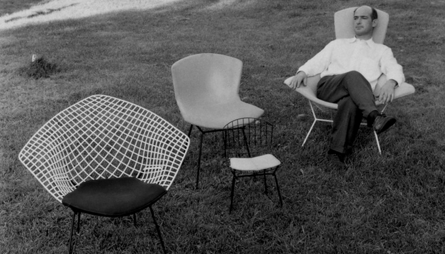
Designed at MGMT. Design
This is really the key!
In the autumn of 1938 an ambitious young German immigrant named Hans Knoll tacked up a sign over the door of a second-floor room he had rented in New York, proclaiming the space “Factory Nr 1.”
A modernist universe was intended to the follow edition to the 1981 book designed by Massimo Vignelli. It is a detailed history of the company with a series of chapter openers that detail the vast network of designers and artists that worked with Knoll.
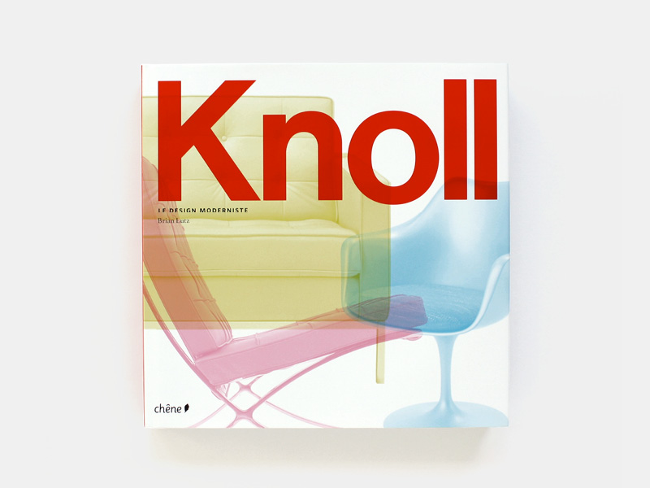
This is the alternate version of the cover for the French edition, we preferred this one as well!
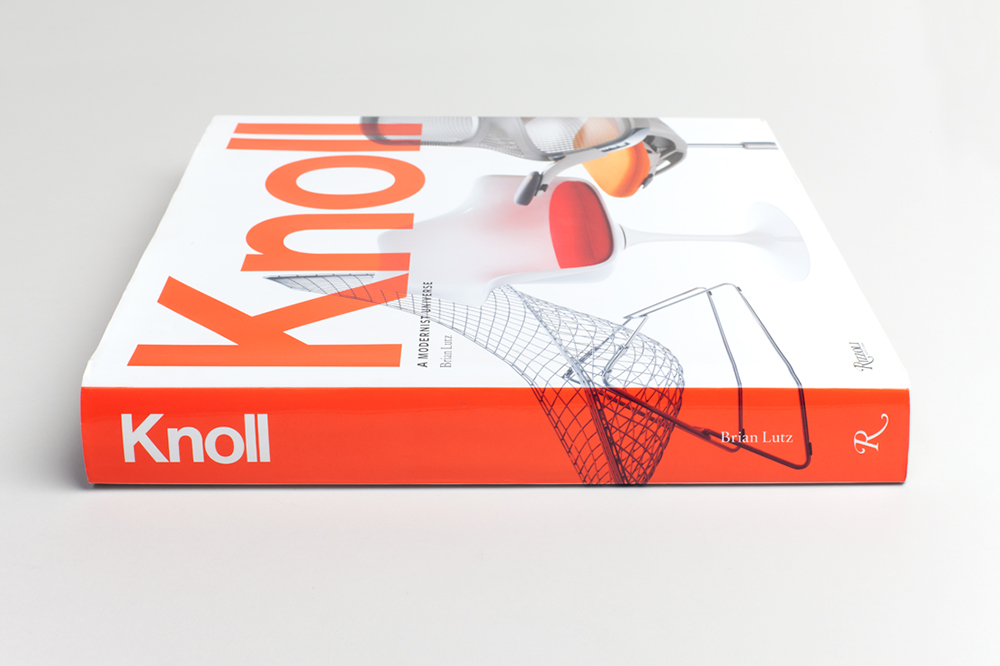
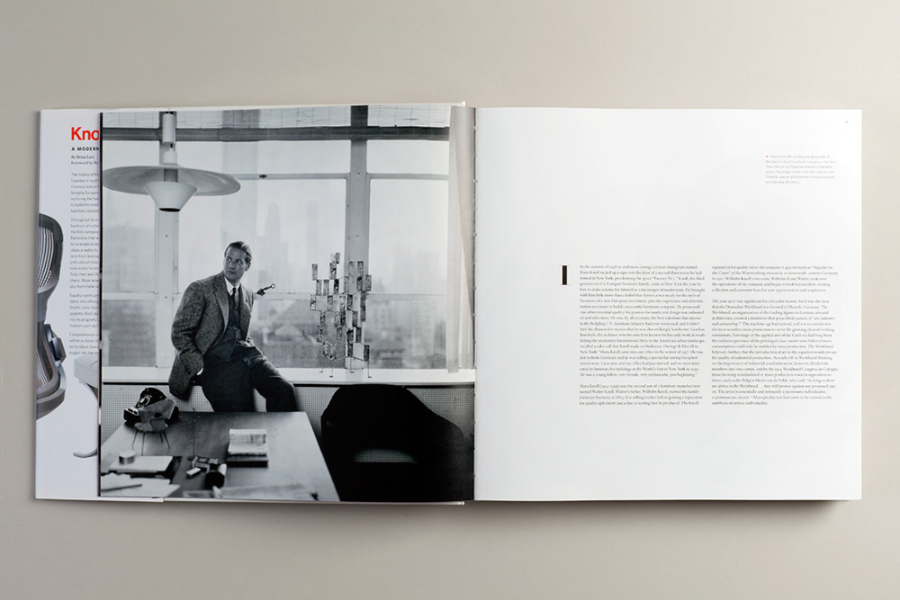
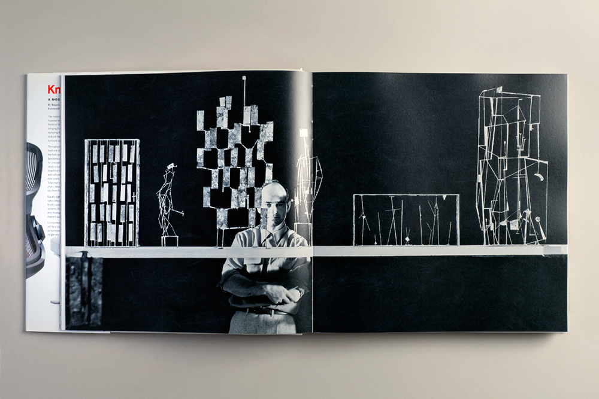
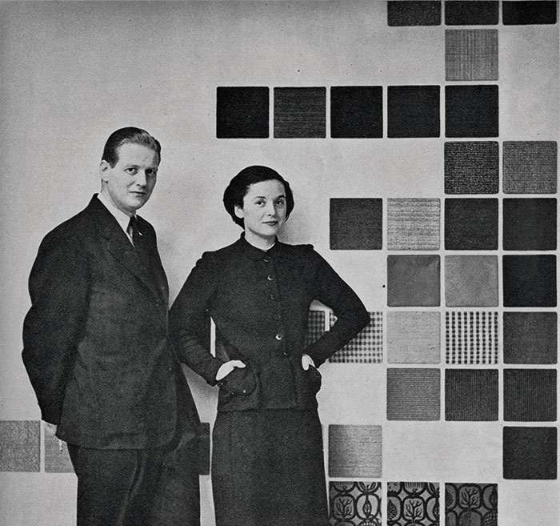
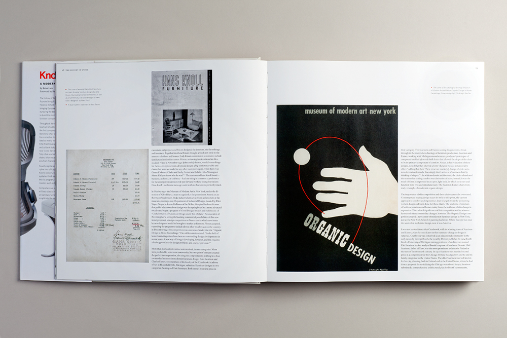
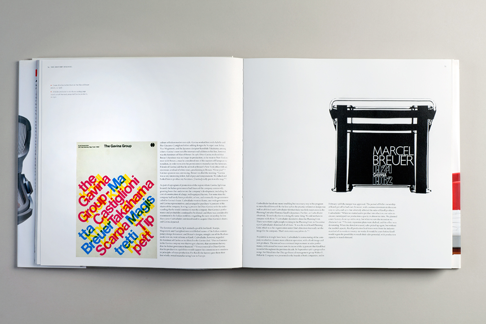
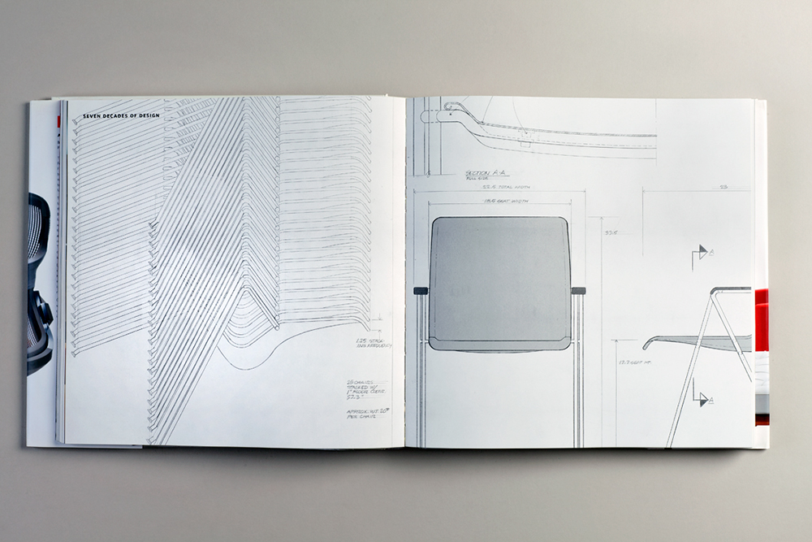
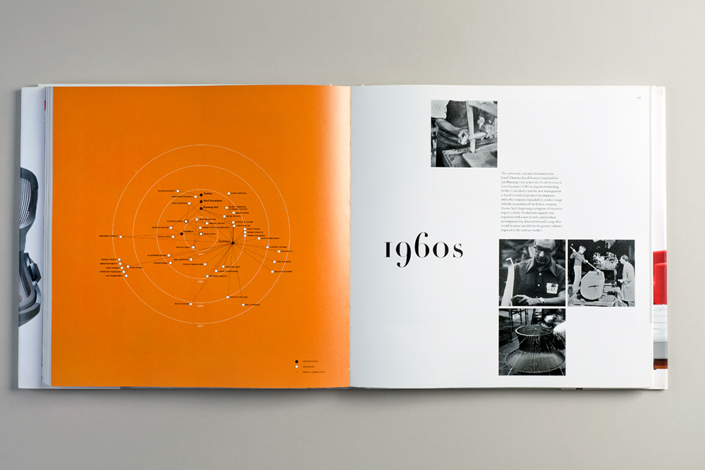
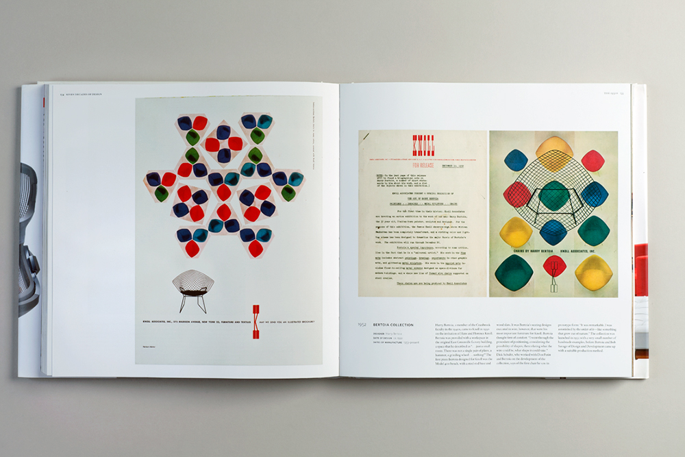
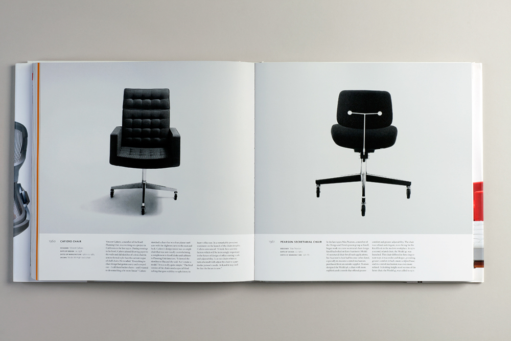
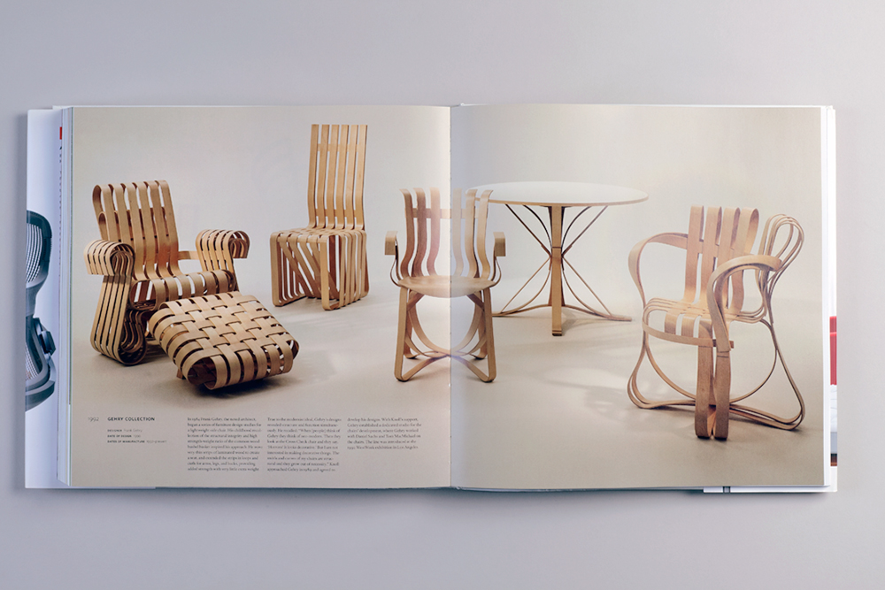